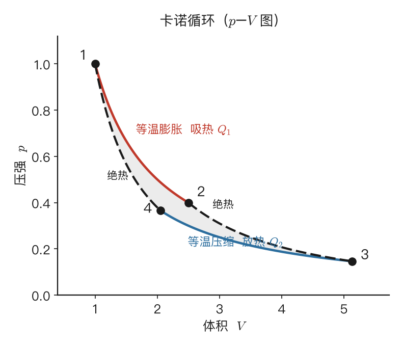

热力学第二定律与熵
3.1 一个第一定律回答不了的问题
[!考试权重] 概念理解，不直接出计算，但理解"方向性"是本章所有公式的动机。
上一章的第一定律是一条强有力的守恒律：能量既不会凭空产生，也不会凭空消失，它只是在内能、功、热之间换来换去。但是当你真正拿它去描述世界时，会发现它有一个尴尬的沉默之处——它从不告诉你过程往哪个方向走。
举一个再普通不过的例子。把一块冰丢进一杯热水里，过一会儿，冰化了，水也凉了。热量从热水流向了冰，能量总账分文不差，第一定律很满意。可是你有没有想过，反过来的剧本同样满足能量守恒：热水自己变得更烫，冰自己冻得更结实，热量从冰倒流回水里——账还是平的，第一定律照样挑不出毛病。然而这件事你这辈子都不会见到。再比如，一杯水里搅起的漩涡会慢慢平息、连同那点搅拌的机械能一起变成微不可察的温升；但你绝不会看到一杯静止的温水忽然自己转起漩涡、把热量重新收集成宏观运动。
这些"不会发生"的剧本有一个共同点：它们都不违反能量守恒，却违反了自然的某种方向感。第一定律像一个只会查账的会计，账平就放行；可现实世界里，大量账平的过程其实根本不可能自发上演。于是热力学需要第二条独立的定律，专门回答"在所有能量守恒的过程里，到底哪些能自发发生、哪些不能"。这就是本章的主角——热力学第二定律，以及为描述这种方向性而诞生的全新物理量——熵。
[要点]
- 第一定律管"量"不管"方向"：能量守恒成立，并不代表过程能自发发生。
- 大量满足能量守恒的过程（热量倒流、温水自发生成漩涡）现实中从不上演。
- 第二定律是独立的"方向定律"；熵是为刻画这种方向性而生的新态函数。
3.2 可逆与不可逆：过程会不会留下"痕迹"
[!考试权重] ★★ 选择题高频。2024 选择第 3 题就考了"可逆一定准静态、准静态不一定可逆、有摩擦一定不可逆"。
既然第二定律是关于方向的，我们就得先有一套语言来谈论"方向"。这套语言的核心，是把一切过程分成两类：可逆的和不可逆的。
什么叫不可逆？设想任何一个过程发生完之后，你想把系统和外界一起恢复到一模一样的初始状态，且不在宇宙别处留下任何改变。如果做不到，这个过程就是不可逆的。热量从高温自发流向低温、气体冲进真空、摩擦把机械能磨成热、电流在电阻里发热、两种气体自发混到一起——无一例外都是不可逆的。它们的共同特征，正是有一个天然的自发方向：热只肯从热往冷走，气体只肯往空处扩散，从不肯自己倒回去。每一个这样的过程，都在世界上留下了一道擦不掉的痕迹。
可逆过程则是另一个极端：它进行得如此理想，以至于事后系统和外界都能精确复原，仿佛什么都没发生过。要做到这一点，它必须同时满足两个苛刻条件。其一是准静态——过程必须无限缓慢，让系统每一刻都停留在平衡态上。其二是无耗散——不能有摩擦、黏性、电阻发热这类把有序能量悄悄变成无序热量的环节。一旦有耗散，哪怕过程再慢，也无法原路返回。
必须强调，可逆过程在现实中并不存在，它是一种理想极限——就像力学里没有摩擦的斜面。那我们为什么还要费心研究一个不存在的东西？因为它划出了理论的上限。对于给定的初末状态，可逆的走法效率最高、浪费最少；任何真实的不可逆过程，效率都只会更差。卡诺正是抓住了这个极限，才问出了那个改变热力学的问题。
2024 选择第 3 题回顾："可逆热力学过程一定是准静态过程"✓；"准静态过程一定是可逆过程"✗（有摩擦的准静态不可逆）；"凡有摩擦的过程一定是不可逆过程"✓。
[要点]
- 不可逆过程：系统+外界无法同时完全复原；都有自发方向。
- 可逆过程 = 准静态（无限慢）且 无耗散（无摩擦/黏性）。现实不存在，是效率的理论上限。
- 可逆 ⊂ 准静态；有摩擦 → 一定不可逆。
3.3 卡诺循环：效率究竟有没有上限
[!考试权重] ★★★ 卡诺效率 $\eta=1-T_2/T_1$ 是全课最重要的公式之一。2024 选择第 2 题直接考了"面积变大但效率不变"。
1824 年，年轻的工程师卡诺盯着当时轰鸣的蒸汽机，问了一个看似工程、实则触及物理根基的问题：热机的效率有没有一个不可逾越的上限？如果有，它由什么决定？
他构造了一台理想化到极致的热机：只和两个恒温热源打交道（高温 $T_1$、低温 $T_2$），全部四个步骤都可逆。以理想气体为工质，卡诺循环分四步：
第一步，等温膨胀（$T_1$）。气体贴着高温热源，极缓慢地膨胀。膨胀要对外做功，本该降温，但热源不断补热，温度纹丝不动。这一步气体从高温源吸热 $Q_1=nRT_1\ln(V_2/V_1)$，因为温度不变内能不变，吸的热全部变成功。
第二步，绝热膨胀。撤掉热源，给气体盖上"绝热被子"继续膨胀。没有热量补给，做功只能消耗自身内能，温度从 $T_1$ 一路降到 $T_2$。
第三步，等温压缩（$T_2$）。贴上低温热源，被缓缓压缩。压缩本该升温，但热量被低温源及时带走，温度稳在 $T_2$。这一步气体向低温源放热 $Q_2=nRT_2\ln(V_3/V_4)$。
第四步，绝热压缩。再次绝热，继续压缩。温度从 $T_2$ 回升到 $T_1$，气体精确地回到起点。

效率：只和温度有关
利用两条绝热线的关系 $T_1V_2^{\gamma-1}=T_2V_3^{\gamma-1}$ 与 $T_1V_1^{\gamma-1}=T_2V_4^{\gamma-1}$，可以证明 $V_2/V_1=V_3/V_4$。于是 $Q_2/Q_1$ 中的对数项约掉，剩下：
$$\frac{Q_2}{Q_1}=\frac{T_2}{T_1}$$
代入效率公式：
$$\boxed{\eta_C = 1 - \frac{T_2}{T_1}}$$
请停下来体会这个公式的分量。它说，一台可逆热机的效率只取决于两个热源的温度——和你用什么气体、机器多大、活塞什么材料统统无关。工质的种种细节在推导中全部消失了，留下的只有温度。这种"细节无关性"几乎总是物理学中藏着深层规律的信号——它正是热力学温标和熵能够成立的根基。
这个公式还顺带告诉我们：要想效率高，就得拉大冷热温差；而只要低温源温度不是绝对零度（它不可达到），效率就永远小于 1——把热全部变成功是做不到的。
⚠️ 最常见的低级失分点：公式里的 $T_1,T_2$ 必须是热力学温度（开尔文）。考卷上若给"高温源 200 °C、低温源 27 °C"，务必先换成 473 K 和 300 K 再代入。
🎯 真题：2024 选择第 2 题
题目：如果卡诺热机的循环曲线所包围的面积从 abcda 增大为 ab'c'da，那么净功和效率变化是？
答案：C。净功增大（面积变大了），但效率不变——因为两个热源温度没变，$\eta=1-T_2/T_1$ 只看温度。
逆循环：制冷机与热泵
卡诺循环完全可逆，倒着走就是制冷机/热泵。正着走从高温吸热→做功→向低温放热；倒着走外界做功→从低温"舀"热→连本带利送给高温。
| 机器 | 目标 | 性能指标 | 卡诺极限 |
|---|---|---|---|
| 热机 | 做功 | $\eta = W/Q_1$ | $1-T_2/T_1$ |
| 制冷机 | 从冷端搬热 | $\varepsilon = Q_2/W$ | $T_2/(T_1-T_2)$ |
| 热泵 | 向热端送热 | $\varepsilon' = Q_1/W = \varepsilon+1$ | $T_1/(T_1-T_2)$ |
注意制冷系数可以大于 1——它衡量的是"每花 1 J 功搬走多少冷量"，和效率不是一回事。
卡诺定理
卡诺断言了两件事：第一，在同样 $T_1,T_2$ 间的所有热机里，可逆热机效率最高；第二，所有可逆热机效率完全相同（$=1-T_2/T_1$），与工质无关。
$$\eta \leq 1 - \frac{T_2}{T_1}$$
等号只有理想的可逆热机才够得着。这不是工程局限，而是物理定律划下的硬边界。
[要点]
- 卡诺循环 = 两等温 + 两绝热，全程可逆。
- 卡诺效率 $\eta_C = 1-T_2/T_1$，只看温度、与工质无关。$T$ 务必用开尔文。
- 制冷系数 $\varepsilon = T_2/(T_1-T_2)$，热泵 $\varepsilon'=\varepsilon+1$。
- 卡诺定理：任意热机 $\eta \leq 1-T_2/T_1$。
3.4 第二定律的两种表述
[!考试权重] ★★ 简答题/选择题可能考两种表述的等价性。关键词"不引起其他变化"是常设陷阱。
卡诺定理给了我们一个具体的"不可能"，第二定律则把这种不可能提炼成了普遍的原理。历史上它有两种经典表述，从"传热"和"做功"两个角度切入，听起来像在说两件事，其实是同一条真理的两个侧影。
克劳修斯表述：热量不可能自发地从低温物体传向高温物体，而不引起其他变化。
开尔文-普朗克表述：不可能从单一热源吸热，并把它完全转化为功，而不引起其他变化。
两种表述里都有一句不起眼却至关重要的限定——"而不引起其他变化"。冰箱明明天天把热量从冷藏室搬到更热的房间，难道不违反克劳修斯表述吗？不违反，因为冰箱消耗了电能，这就是"其他变化"。第二定律从不禁止你把热往高处搬、或把热变成功，它只是斩钉截铁地说：你休想免费做到，总得付出代价。
两种表述可以严格证明是等价的：违反其一必然导致违反其二。粗略地感受从克劳修斯到开尔文——假如真有一台"完美导热器"能不花功把热量 $Q$ 从低温源搬到高温源，那我们就让一台正常热机从高温源吸 $Q_1$、做功 $W$、向低温源放 $Q_2$，再用完美导热器把 $Q_2$ 原样搬回高温源。净效果是：低温源毫发无损，高温源净失去 $W$ 的热，全变成功——恰好是开尔文表述所禁止的。一个漏洞撑开，另一个就守不住，可见两者本是一体。
说到底，第二定律的内核只有一句话：自然过程是有方向的。要把这个模糊的"方向感"变成可计算的数学，我们还差一座桥——克劳修斯不等式。
[要点]
- 克劳修斯：热量不能自发由低温传向高温，不引起其他变化。
- 开尔文：不能从单一热源吸热并完全转化为功，不引起其他变化。
- 两表述严格等价；关键词"不引起其他变化"。
- 内核：自然过程有方向。
3.5 克劳修斯不等式与熵的诞生
[!考试权重] ★★★ 熵的定义 $dS = \text{đ}Q_{rev}/T$ 和"不可逆过程找可逆路径算熵变"的方法是全章计算题的灵魂。
克劳修斯不等式
把卡诺定理从"两个热源"推广到"任意多个热源、任意循环"，克劳修斯得到了一个极其凝练的不等式：
$$\boxed{\oint \frac{\text{đ}Q}{T} \leq 0}$$
可逆循环取等号，不可逆循环取严格小于号。式中 $T$ 是与系统交换热量的热源温度（不是系统温度——只有可逆过程两者才相等）。
熵的诞生
先看不可逆的情形：$\oint \text{đ}Q/T<0$，绕一圈不为零，说明 $\text{đ}Q/T$ 不是某个状态函数的全微分。
再看可逆的情形：$\oint \text{đ}Q_{rev}/T=0$，绕任意闭合回路积分都精确归零。而"绕任意闭合回路积分为零"在数学上正是"全微分"的标志——就像保守力场里做功与路径无关、从而能定义势能一样。这意味着 $\text{đ}Q_{rev}/T$ 是某个崭新状态函数的全微分。克劳修斯把它命名为熵 $S$：
$$\boxed{dS = \frac{\text{đ}Q_{rev}}{T}}, \qquad \Delta S = S_B - S_A = \int_A^B \frac{\text{đ}Q_{rev}}{T}$$
最关键的方法论：不可逆过程怎么算熵变
熵和内能一样，是不折不扣的状态量：系统处在某个平衡态，就有一个确定的熵值，与它如何到达此处无关。这带来一个初学者几乎都会卡住、却又是全章最关键的思想转折：
定义里写的是 $\text{đ}Q_{rev}$——可现实中的过程往往是不可逆的（自由膨胀、有限温差传热），它们根本没有可逆的热量可言，难道就算不出熵变了吗？
答案恰恰相反，而且妙就妙在这里：因为熵是状态量，$\Delta S$ 只认初末态、不认路径，所以哪怕真实过程再怎么不可逆，我们都可以另找一条连接同样初末态的、虚构的可逆路径，沿这条想象出来的路径去积分 $\text{đ}Q_{rev}/T$，算出来的就是真实的熵变。
⚠️ 黄金三步法（本章最核心的解题方法）：
- 确定初态和末态（真实过程给你的）
- 自己设计一条连接它们的可逆路径（可以和真实过程完全不同！）
- 沿这条可逆路径积分 $\int \text{đ}Q_{rev}/T$
绝对禁止对不可逆过程直接套 $\Delta S = Q_{实际}/T$！这是本章最高频的失分点。
[要点]
- 克劳修斯不等式 $\oint \text{đ}Q/T \leq 0$；$T$ 用热源温度。
- 可逆时取等号 → $\text{đ}Q_{rev}/T$ 是全微分 → 定义态函数熵。
- $dS = \text{đ}Q_{rev}/T$；熵是状态量，只看初末态。
- 不可逆过程：用虚构可逆路径算熵变（黄金三步法）。
3.6 理想气体熵变公式
[!考试权重] ★★★ 本节的公式是计算题核心武器。2024 第 3 题和第 5 题都直接用到。
设 $n$ mol 理想气体从 $(T_1,V_1)$ 变到 $(T_2,V_2)$，我们设计一条可逆路径——先等容加热到 $T_2$，再等温膨胀到 $V_2$：
等容段：$\text{đ}Q_{rev} = nC_{V,m}\,dT$，$\Delta S_1 = \int_{T_1}^{T_2}\frac{nC_{V,m}}{T}\,dT = nC_{V,m}\ln\frac{T_2}{T_1}$
等温段：$\text{đ}Q_{rev} = p\,dV = nRT\frac{dV}{V}$，$\Delta S_2 = nR\ln\frac{V_2}{V_1}$
两段相加：
$$\boxed{\Delta S = nC_{V,m}\ln\frac{T_2}{T_1} + nR\ln\frac{V_2}{V_1}}$$
等价形式
用 $T,p$ 表示（代入 $V=nRT/p$）：$\Delta S = nC_{p,m}\ln\dfrac{T_2}{T_1} - nR\ln\dfrac{p_2}{p_1}$
用 $p,V$ 表示：$\Delta S = nC_{V,m}\ln\dfrac{p_2}{p_1} + nC_{p,m}\ln\dfrac{V_2}{V_1}$
特殊过程退化
| 过程 | 熵变 |
|---|---|
| 等温（$T$ 不变） | $nR\ln(V_2/V_1)$ |
| 等容（$V$ 不变） | $nC_{V,m}\ln(T_2/T_1)$ |
| 等压（$p$ 不变） | $nC_{p,m}\ln(T_2/T_1)$ |
| 可逆绝热 | $\Delta S = 0$（等熵过程） |
其他常用熵变
- 物体变温：$\Delta S = mc\ln(T_2/T_1)$
- 恒温热源吸热 $Q$：$\Delta S = Q/T$（放热取负号）
示范：自由膨胀的熵变
1 mol 理想气体在绝热容器中向真空自由膨胀，体积 $V_1\to 2V_1$。
真实过程：$Q=0,W=0,\Delta U=0$，温度不变。如果天真地写 $\Delta S = Q/T = 0$ → 错！（不可逆过程不能这么算）
正确做法：初末态都确定了（$T$ 不变，$V$ 变为 $2V_1$），找一条等温可逆膨胀路径：
$$\Delta S = nR\ln\frac{2V_1}{V_1} = R\ln2 \approx 5.76 \text{ J/K} > 0$$
系统没吸热，熵却增加了——这正是不可逆性的标志。
[要点]
- 母公式 $\Delta S = nC_{V,m}\ln(T_2/T_1) + nR\ln(V_2/V_1)$。
- 等价形式：$(T,p)$ 版、$(p,V)$ 版。
- 可逆绝热 = 等熵；自由膨胀用等温可逆路径算得 $\Delta S > 0$。
3.7 熵增原理与时间之箭
[!考试权重] ★★★ 判方向、验证计算结果的终极武器。
把上一节的发现推到极致，就得到第二定律最优美也最有威力的表述。对一个孤立系统——与外界既不交换热也不交换功：
$$\boxed{\Delta S_{total} \geq 0}$$
可逆取等号，不可逆取大于号。一句话：孤立系统的熵永不减少。
它的威力在于给了我们一个判断过程方向的普适判据：一个孤立系统里能自发发生的过程，必是让总熵增加的过程；任何会让总熵减少的过程，都被自然禁止。
当然，我们关心的系统大多不是孤立的。这时候要看系统与外界的总熵：
$$\Delta S_{总} = \Delta S_{系统} + \Delta S_{环境} \geq 0$$
系统的熵完全可以减少（冰箱里的空气越来越冷，熵在降），关键是环境的熵增加得更多。
实用分工：
- 系统熵变：老老实实用可逆路径法（黄金三步）
- 环境熵变：环境通常是恒温大热源，$\Delta S_{环境} = -Q_{实际}/T_{环境}$（负号因为系统吸的热是环境放的）
微观解释
玻尔兹曼给出了熵的统计意义：$S = k\ln\Omega$，其中 $\Omega$ 是与某宏观态对应的微观状态数。熵大 = 实现这个宏观态的微观方式特别多 = 更"混乱"。熵增就是系统从微观方式少（有序）的状态，自发滑向微观方式多（无序）的状态——纯粹因为后者的"花样"压倒性地多。
值得玩味的是，熵减并非绝对不可能，只是概率低到了 $\sim10^{-10^{23}}$ 这种荒诞的量级。所谓"不可逆"，本质上是"逆转的概率小到可以当成零"。
[要点]
- 熵增原理 $\Delta S_{总} \geq 0$：可逆取等号，不可逆严格大于。
- 判方向：$\Delta S_{总} = \Delta S_{系统} + \Delta S_{环境} \geq 0$。
- 环境（恒温热源）：$\Delta S_{环境} = -Q_{实际}/T_{环境}$。
- 微观：$S=k\ln\Omega$。
3.8 T-S 图与卡诺循环的矩形
[!考试权重] ★ 复习课反复出现 T-S 图，偶尔出选择题。理解"面积=热量"即可。
在 $p$-$V$ 图上曲线下面积是功；引入熵后，多了一张T-S 图，横轴熵 $S$、纵轴温度 $T$。由 $\text{đ}Q_{rev}=T\,dS$，可逆过程吸收的热量 $Q=\int T\,dS$ = T-S 图曲线下面积。两张图形成漂亮的对偶。
卡诺循环在 T-S 图上变成矩形：
- 两条等温线 → 水平线（$T$ 不变）
- 两条绝热线 → 竖直线（$S$ 不变，等熵）
- 上边面积 $Q_1 = T_1\Delta S$，下边面积 $Q_2 = T_2\Delta S$
- 矩形面积 = 净功 $W = (T_1-T_2)\Delta S$
- 效率 = 矩形面积 / 上边下方总面积 = $(T_1-T_2)/T_1$ → 一眼看出
[要点]
- T-S 图面积 = 热量；与 p-V 图面积 = 功对偶。
- 卡诺循环在 T-S 图上是矩形，效率一目了然。
3.9 从第二定律推导：PVT 系统的内能与 Cp-Cv
[!考试权重] ★★ 公式 $(\partial U/\partial V)_T = T(\partial p/\partial T)_V - p$ 是 2024 压轴题（16分）的核心工具。
热力学基本方程（把第一定律和熵定义合在一起）：
$$TdS = dU + pdV$$
这是一个非常强大的关系——它把 $S,U,V$ 三个态函数用一个等式联系起来。从中可以推出许多重要结论。
内能的体积依赖
$S$ 是 $T,V$ 的函数，写出 $dS$，与 $TdS = dU + pdV$ 对比系数，经过一番偏导运算可得：
$$\boxed{\left(\frac{\partial U}{\partial V}\right)_T = T\left(\frac{\partial p}{\partial T}\right)_V - p}$$
这个公式的威力：只要知道状态方程 $p(T,V)$，就能算出内能对体积的依赖。
验证理想气体：$p=nRT/V$，$(\partial p/\partial T)_V = nR/V$，代入得 $T\cdot nR/V - p = p-p = 0$。✓ 内能与体积无关。
应用于范德瓦尔斯气体：$p = RT/(V_m-b) - a/V_m^2$
$(\partial p/\partial T)_V = R/(V_m-b)$
代入：$T\cdot R/(V_m-b) - [RT/(V_m-b) - a/V_m^2] = a/V_m^2$
于是 $dU = C_V dT + (a/V_m^2)\,dV_m$，积分得 1 mol 范氏气体：
$$\boxed{U = C_V T - \frac{a}{V_m} + \text{const.}}$$
这告诉我们范氏气体的内能不仅取决于温度，还取决于体积——因为分子间有吸引力势能 $-a/V_m$。体积越大、分子间距越大、势能越高（越不负）、动能就越少 → 温度下降。这正是 2024 压轴题的物理核心。
Cp-Cv 的一般表达
类似地可推出：
$$C_p - C_V = T\left(\frac{\partial p}{\partial T}\right)_V\left(\frac{\partial V}{\partial T}\right)_p$$
对理想气体退化为 Mayer 关系 $C_p - C_V = nR$。
[要点]
- $(\partial U/\partial V)_T = T(\partial p/\partial T)_V - p$：从状态方程推内能。
- 范氏气体：$U = C_VT - a/V_m$，内能与体积有关。
- 物理意义：分子间吸引力 → 势能 $-a/V_m$ → 膨胀时势能增、动能减 → 降温。
3.10 例题精讲与真题实战
例题 1：卡诺热机与制冷机
题目：卡诺热机工作在 $T_1=500$ K、$T_2=300$ K 之间，每循环吸热 $Q_1=600$ J。求效率、净功、放热、制冷系数。
解答：$\eta=1-300/500=40\%$。$W=240$ J。$Q_2=360$ J。制冷系数 $\varepsilon=T_2/(T_1-T_2)=300/200=1.5$。
例题 2：自由膨胀（不可逆）vs 等温可逆膨胀——对比
题目：1 mol 理想气体，体积从 $V_1$ 变到 $2V_1$。分别讨论 (a) 绝热自由膨胀 (b) 等温可逆膨胀。比较两者的系统熵变、环境熵变、总熵变。
解答：
| 自由膨胀（不可逆） | 等温可逆膨胀 | |
|---|---|---|
| 初末态 | $(T, V_1)\to(T, 2V_1)$ | 完全相同 |
| $\Delta S_{系统}$ | $R\ln2 = 5.76$ J/K | $R\ln2 = 5.76$ J/K |
| $\Delta S_{环境}$ | $0$（绝热，无热交换） | $-R\ln2$（热源放出了 $Q=RT\ln2$） |
| $\Delta S_{总}$ | $5.76 > 0$（不可逆 ✓） | $0$（可逆 ✓） |
关键领悟：两种过程系统熵变完全相同（因为初末态相同，熵是状态量）。区别全在环境——可逆过程的"代价"被环境精确记录了（环境熵减恰好抵消系统熵增），不可逆过程则"白白"制造了净熵。
例题 3：两物体热接触
题目：两块同种金属，$m$、$c$ 相同，初温 $T_1=400$ K、$T_2=200$ K。求末温和总熵变。
解答：$T_f=(400+200)/2=300$ K。
$$\Delta S = mc\ln\frac{300}{400} + mc\ln\frac{300}{200} = mc\ln\frac{300^2}{400\times200} = mc\ln\frac{9}{8} \approx 0.118\,mc > 0$$
有限温差传热不可逆，必然制造净熵。
🎯 真题实战：2024 计算第 3 题（15 分）
题目：1 mol 氦气（$C_{V,m}=\frac{3}{2}R$，$\gamma=5/3$）经历循环 $a\to b\to c\to a$。$a\to b$ 为直线（$V_0\to5V_0$，$7p_0\to3p_0$），$b\to c$ 等压，$c\to a$ 绝热。求 (1) $a\to b$ 熵变；(2) 循环效率。
解答 (1)：用 $(p,V)$ 形式的熵变公式（因为已知初末态的 $p$ 和 $V$）：
$$\Delta S_{ab} = C_{V,m}\ln\frac{p_b}{p_a} + C_{p,m}\ln\frac{V_b}{V_a} = \frac{3}{2}R\ln\frac{3}{7} + \frac{5}{2}R\ln\frac{5}{1}$$
$= 12.47\times(-0.847) + 20.79\times1.609 = -10.56 + 33.46 \approx 22.9$ J/K
解答 (2)：
$a\to b$ 直线方程：$p = 8p_0 - (p_0/V_0)V$
$a\to b$ 吸热（需积分 $\text{đ}Q = dU + pdV$）：
$$\text{đ}Q = \frac{3}{2}(pdV+Vdp) + pdV = \frac{5}{2}pdV + \frac{3}{2}Vdp$$
代入 $p$ 和 $dp = -(p_0/V_0)dV$：
$$\text{đ}Q = \left(20p_0 - 4\frac{p_0}{V_0}V\right)dV$$
积分 $V_0\to5V_0$：$Q_{ab} = 20p_0\times4V_0 - 4\frac{p_0}{V_0}\times\frac{(5V_0)^2-V_0^2}{2} = 80p_0V_0 - 48p_0V_0 = 32p_0V_0$
$b\to c$ 等压，$c\to a$ 绝热。由 $p_aV_a^\gamma = p_cV_c^\gamma$（$c$ 和 $a$ 在同一绝热线，$p_c=3p_0$）：
$7p_0\cdot V_0^{5/3} = 3p_0\cdot V_c^{5/3}$ → $V_c = (7/3)^{3/5}V_0 \approx 1.663V_0$
$T_b = 3p_0\times5V_0/R = 15p_0V_0/R$，$T_c = 3p_0\times1.663V_0/R \approx 4.99p_0V_0/R$
$Q_{bc} = C_{p,m}(T_c-T_b) = \frac{5}{2}(4.99-15)p_0V_0 = -25.03p_0V_0$（放热）
$$\eta = 1 - \frac{|Q_{bc}|}{Q_{ab}} = 1 - \frac{25.03}{32} \approx 21.8\%$$
🎯 真题实战：2024 计算第 5 题（16 分）
题目：绝热容器体积 $V$，左边 $V/3$ 装 1 mol 范氏气体（温度 $T$，$C_V$ 常数），右边真空。抽隔板求 $\Delta U$、$\Delta T$、$\Delta S$。
解答：
(1) 自由膨胀：$Q=0$，向真空膨胀 $W=0$ → $\boxed{\Delta U = 0}$
(2) $dU = C_VdT + (a/V_m^2)dV_m = 0$，积分：
$$C_V\Delta T = -a\left(\frac{1}{V_{m,1}} - \frac{1}{V_{m,2}}\right) = -a\left(\frac{1}{V/3} - \frac{1}{V}\right) = -a\cdot\frac{2}{V}$$
$$\boxed{\Delta T = -\frac{2a}{C_V V}}$$
温度下降！物理意义：分子间距增大 → 分子间势能增加（从 $-a/V_{m,1}$ 到 $-a/V_{m,2}$，绝对值减小）→ 动能必须减小 → 温度降低。
(3) 用热力学基本方程 $TdS = C_VdT + [T(\partial p/\partial T)_V]dV_m = C_VdT + \frac{RT}{V_m-b}dV_m$：
$$dS = \frac{C_V}{T}dT + \frac{R}{V_m-b}dV_m$$
构造可逆路径从 $(V/3, T)$ 到 $(V, T+\Delta T)$，积分：
$$\Delta S = C_V\ln\frac{T+\Delta T}{T} + R\ln\frac{V-b}{V/3-b}$$
代入 $\Delta T = -2a/(C_VV)$ 即为最终答案。
可以进一步简化为 $\Delta S = C_V\ln(1-\frac{2a}{C_VVT}) + R\ln\frac{3(V-b)}{3V-3b}$——但考试写到上一步已经拿满分了。
3.11 自由能简介
[!考试权重] ○ 热学B考试极少直接考自由能计算，但了解判据有助于理解整体框架。
熵增原理要求系统孤立。可现实中系统多在恒温恒压下工作。为了不每次都算环境熵变，引入自由能：
- 等温等容 → 亥姆霍兹自由能 $F = U - TS$：自发过程 $\Delta F \leq 0$
- 等温等压 → 吉布斯自由能 $G = H - TS$：自发过程 $\Delta G \leq 0$
三条判据本质相同：孤立看 $\Delta S\geq0$，等温等容看 $\Delta F\leq0$，等温等压看 $\Delta G\leq0$。
[要点]
- 等温等容：$\Delta F\leq0$；等温等压：$\Delta G\leq0$。
- 同一第二定律在不同约束下的表现形式。
3.12 概念辨析
可逆绝热是等熵，不可逆绝热呢？ 不可逆绝热 $Q=0$ 但 $\Delta S > 0$。不可逆性本身就是熵的源头（$dS > \text{đ}Q/T$）。
效率为什么到不了 100%？ $\eta=1-T_2/T_1$，要 $\eta=1$ 需 $T_2=0$ K（不可达）。物理上：热机必须向低温源"倾倒废热"才能完成循环。
空调违反第二定律吗？ 不违反。它消耗电能（"其他变化"），总熵仍增加。
"找可逆路径"是不是随便找？ 是的——任何连接相同初末态的可逆路径都行，算出来的熵变一定相同（因为是状态量）。选最方便算的那条即可。
3.13 公式速查卡
卡诺效率 ★：$\eta_C = 1-T_2/T_1$；制冷 $\varepsilon = T_2/(T_1-T_2)$；热泵 $\varepsilon'=\varepsilon+1$
熵定义 ★：$dS = \text{đ}Q_{rev}/T$
理想气体熵变 ★：$\Delta S = nC_{V,m}\ln(T_2/T_1) + nR\ln(V_2/V_1) = nC_{p,m}\ln(T_2/T_1) - nR\ln(p_2/p_1)$
物体变温 ★：$mc\ln(T_2/T_1)$；恒温热源 ★：$\pm Q/T$
熵增原理 ★：$\Delta S_{总} = \Delta S_{系统} + \Delta S_{环境} \geq 0$
PVT 内能 ★：$(\partial U/\partial V)_T = T(\partial p/\partial T)_V - p$
范氏气体 ★：$U = C_VT - a/V_m$
3.14 本章小结
| 核心概念 | 一句话 |
|---|---|
| 方向性 | 第一定律管量，第二定律管方向 |
| 可逆 vs 不可逆 | 可逆=准静态+无耗散；有摩擦一定不可逆 |
| 卡诺循环 | 两等温+两绝热；$\eta=1-T_2/T_1$；T-S 图是矩形 |
| 第二定律 | 克劳修斯（热不自发冷→热）= 开尔文（单热源不能全取热做功） |
| 熵 | 状态量；$dS=\text{đ}Q_{rev}/T$；不可逆用虚构可逆路径算 |
| 熵变公式 | $nC_V\ln(T_2/T_1)+nR\ln(V_2/V_1)$；各种退化 |
| 熵增原理 | $\Delta S_{总}\geq0$；给时间安上箭头 |
| PVT 内能 | $(\partial U/\partial V)_T = T(\partial p/\partial T)_V - p$；范氏 $U=C_VT-a/V_m$ |
| 微观 | $S=k\ln\Omega$；熵增=朝更可能的方向演化 |